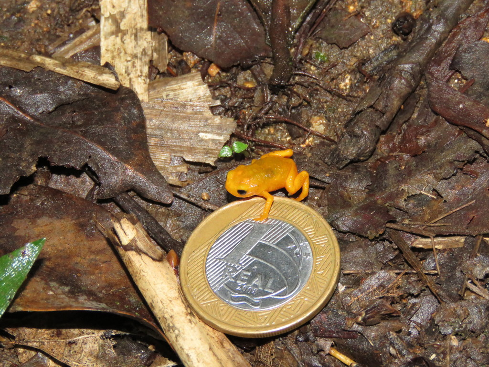

O Pumpkin toadlet, ou sapo abóbora, pertecente ao gênero Brachycephalus é um minúsculo anfíbio de cor alaranjada encontrado no meio
da folhagem das florestas do sudeste brasileiro é o mais desajeitado de todos.
O sapo menor que uma moeda de um real com o tamanho variado entre 12.5 á 19.7 mm, depois de se lançar ao ar em uma tentativa falha de
de pulo ele dá cambalhotas antes de cair no chão de costa ou barriga,
pesquisador suspeitam que seu pouso forçado pode ser devido á sua incapacidade de se equilibrar no meio do salto, uma consequência de sua estrutura em miniatura,
eles não são bons saltadores nem andam bem.
|  | Esses sapinhos infelizmente, devido ao seu tamanho, possuem um sistema vestibular, estruturas dentro do ouvido que orientam o equilíbrio nos vertebrados,
bem pequeno, assim Assim, quando saltam, o líquido que fica dentro da estrutura vestibular acaba batendo em todos os lados da parede de seu órgão
e isso faz eles perderem o equilíbrio e caírem de forma desajeitada e até mesmo de barriga para cima.
O fluxo de fluido dentro dos canais semicirculares conforme a cabeça e o corpo se movem para cima e para baixo, de um lado para o outro ou para frente e para trás, fornece ao cérebro informações sobre o posicionamento. Como os tubos do minúsculo sapo são muito pequenos, é mais difícil para o fluido fluir livremente e causa sensibilidade reduzida a mudanças na orientação do corpo, é o unico exemplo de animal que não é capaz de ouvir seu proprio chamado de acasalamento. |
Veja como o Pumpkin toadlet pula
aqui
Pumpkin toadlet - sapo abóbora
Pumpkin toadlet, como ocorre seu desenvolvimento